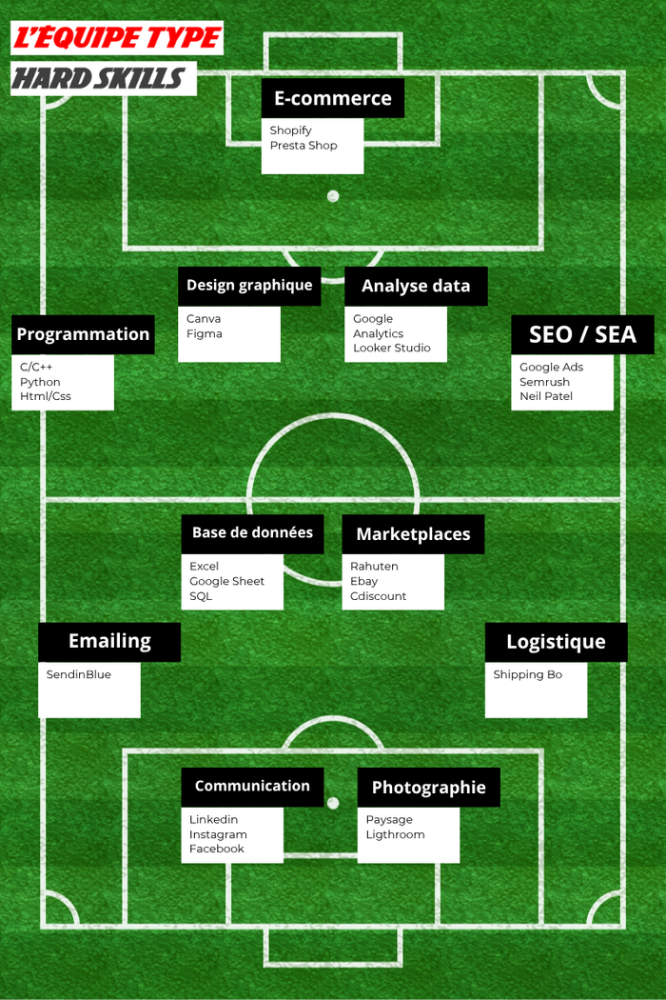

Sport, Compétences, profil
Hard et Soft Skills
 Des hard skills au service de l’innovation digitale
Lucas a su développer une solide expertise technique qui lui permet de naviguer avec aisance dans le monde du digital. Sa maîtrise des outils de gestion de sites web, notamment PrestaShop et Shopify, a été un véritable atout dans la mise en place de stratégies e-commerce performantes. Grâce à ses compétences en programmation (C, C++, HTML, PHP, CSS, Python), il est également en mesure de résoudre les défis techniques liés à l’optimisation des sites web.
Dans son rôle actuel, il gère avec brio les campagnes Google Ads, qu'il optimise pour générer des leads de qualité et améliorer la visibilité de l'entreprise. Son approche analytique se traduit par une gestion fine des données via Google Analytics, qu’il exploite pour affiner les stratégies et mesurer l’impact des actions menées. Il est également à l’aise avec l’utilisation de CRM, comme Sage CRM, pour assurer un suivi de la relation client de qualité.
Enfin, Lucas ne néglige pas l’aspect créatif du marketing. Que ce soit pour la création de visuels percutants sur Canva ou pour la gestion d'événements destinés à renforcer la notoriété de DUOBAT, il sait allier innovation et efficacité.
Des hard skills au service de l’innovation digitale
Lucas a su développer une solide expertise technique qui lui permet de naviguer avec aisance dans le monde du digital. Sa maîtrise des outils de gestion de sites web, notamment PrestaShop et Shopify, a été un véritable atout dans la mise en place de stratégies e-commerce performantes. Grâce à ses compétences en programmation (C, C++, HTML, PHP, CSS, Python), il est également en mesure de résoudre les défis techniques liés à l’optimisation des sites web.
Dans son rôle actuel, il gère avec brio les campagnes Google Ads, qu'il optimise pour générer des leads de qualité et améliorer la visibilité de l'entreprise. Son approche analytique se traduit par une gestion fine des données via Google Analytics, qu’il exploite pour affiner les stratégies et mesurer l’impact des actions menées. Il est également à l’aise avec l’utilisation de CRM, comme Sage CRM, pour assurer un suivi de la relation client de qualité.
Enfin, Lucas ne néglige pas l’aspect créatif du marketing. Que ce soit pour la création de visuels percutants sur Canva ou pour la gestion d'événements destinés à renforcer la notoriété de DUOBAT, il sait allier innovation et efficacité.
